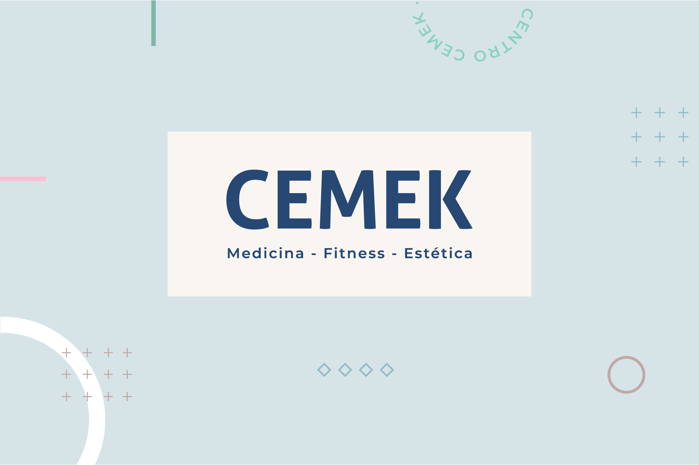

Más de 17 especialidades médicas, actividad física y estética para el cuidado integral de tu salud en Rosario.
Atención médica de excelencia en múltiples especialidades, con profesionales altamente capacitados.
Técnica milenaria para el tratamiento del dolor y diversas afecciones mediante puntos de estimulación.
Diagnóstico y tratamiento de enfermedades internas con atención integral del paciente adulto.
Prevención, diagnóstico y tratamiento de enfermedades cardiovasculares con equipos de última generación.
Atención de trastornos hormonales, diabetes, tiroides y enfermedades metabólicas.
Atención primaria integral para toda la familia, con enfoque preventivo y de seguimiento continuo.
Diagnóstico y tratamiento de enfermedades del sistema nervioso central y periférico.
Tratamiento de enfermedades autoinmunes, articulares y del tejido conectivo.
Atención ginecológica y obstétrica completa para la salud de la mujer en todas las etapas de la vida.
Diagnóstico y tratamiento de lesiones del aparato locomotor: huesos, articulaciones y tejidos blandos.
Atención de patologías del sistema urinario y masculino con profesionales especializados.
El corazón de CEMEK desde 1985. Especialistas en recuperación funcional y corrección postural.
Rehabilitación física, recuperación funcional y tratamiento del dolor mediante técnicas especializadas de kinesioterapia.
Especialidad fundacional de CEMEK. Tratamiento manual de la columna vertebral para la corrección postural y el alivio del dolor.
Técnica manual que trabaja sobre el sistema musculoesquelético para restablecer el equilibrio y la función del organismo.
Método integral para identificar y corregir desequilibrios posturales que generan dolor crónico y limitaciones funcionales.

Bienestar integral desde adentro hacia afuera, con acompañamiento profesional personalizado.
Acompañamiento psicológico para adultos, adolescentes y niños. Psicoterapia individual y de pareja con enfoque humanista e integrador.
Planes nutricionales personalizados para pérdida de peso, rendimiento deportivo, enfermedades metabólicas y hábitos saludables.
Tratamientos estéticos con respaldo médico para realzar tu imagen y autoestima con seguridad.
Tratamientos no quirúrgicos: rejuvenecimiento, rellenos, toxina botulínica, mesoterapia y más, a cargo de médicos especialistas.
Procedimientos quirúrgicos reconstructivos y estéticos con cirujanos plásticos certificados y años de experiencia.
Entrenamiento con supervisión profesional para mejorar tu condición física y calidad de vida.
Programas de entrenamiento personalizados con profesores de educación física para alcanzar tus objetivos de manera segura y efectiva.
Clases de Pilates en equipos profesionales (reformer, cadillac) para mejorar la postura, la flexibilidad y la fuerza del core.
Tecnología de diagnóstico para una evaluación precisa y oportuna de tu estado de salud.
Estudios ecográficos de alta resolución para diagnóstico de tejidos blandos, órganos abdominales, musculoesquelético y obstétrico.
Radiografías digitales con equipos modernos de baja radiación para diagnóstico óseo y torácico.



Contactanos y te asesoramos sobre qué especialidad es la más adecuada para vos.